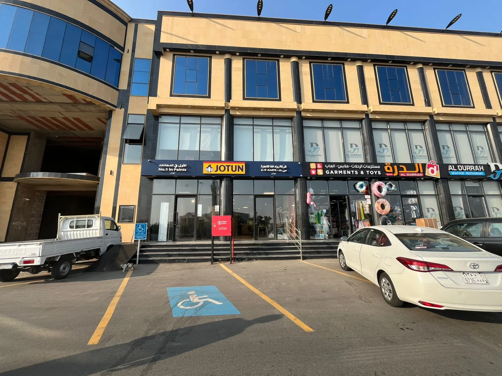
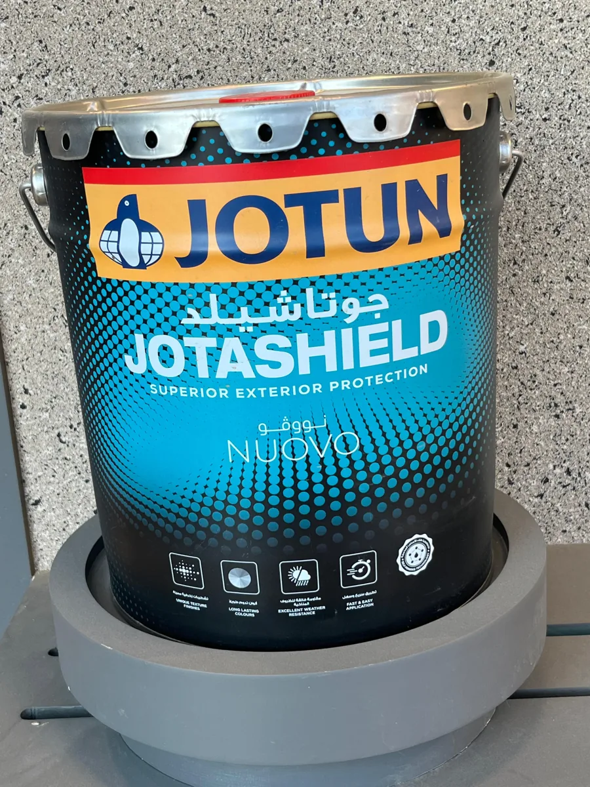

Decorative coatings
Interior wall paints, elegant finishes, color consultation, washable surfaces, and modern finish systems for villas, apartments, and commercial spaces.
Premium paint technology
Jotun Rowad Alfa Paint Shop brings trusted paint technology to customers who need durable exterior protection, refined decorative finishes, and practical product guidance.

Products
Interior wall paints, elegant finishes, color consultation, washable surfaces, and modern finish systems for villas, apartments, and commercial spaces.
Weather-resistant exterior systems including Jotashield-style protection for long-lasting color, surface defense, and fast application.
Guidance for protective coating needs, primers, application accessories, and surface preparation requirements for professional users.
Services
Customers can compare finishes, review color options, select the right system for climate and surface conditions, and purchase paint accessories for reliable application.

Visit
Dahaban, Kingdom of Saudi Arabia. Product availability and service hours can be confirmed directly with the shop team.